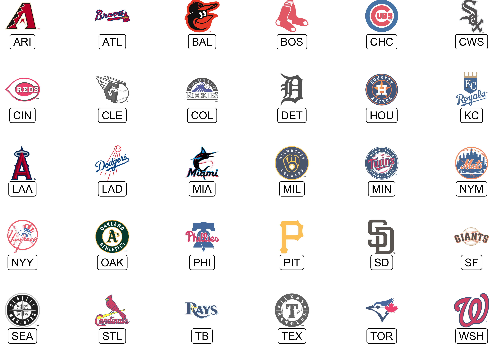

The code for this package was copied heavily from nflplotR with minor changes to support Major League Baseball logos.
The goal of mlbplotR is to provide functions and geoms that help with visualizations of MLB related analysis. It provides ggplot2 geoms that do the heavy lifting of plotting MLB logos in high quality, with correct aspect ratio, and possible transparency.
Installation
mlbplotR is currently not on CRAN but you can get the development version from GitHub with:
# install.packages("devtools")
devtools::install_github("camdenk/mlbplotR")Usage
Let’s plot every team on a grid with some extra customization:
library(mlbplotR)
library(ggplot2)
library(dplyr)
teams_colors_logos <- mlbplotR::load_mlb_teams() |>
dplyr::filter(!team_abbr %in% c("AL", "NL", "MLB")) |>
dplyr::mutate(
a = rep(1:6, 5),
b = sort(rep(1:5, 6), decreasing = TRUE),
alpha = ifelse(grepl("A", team_abbr), 1, 0.75), # Keep alpha == 1 for teams that have an "A"
color = ifelse(grepl("E", team_abbr), "b/w", NA) # Set teams that have an "E" to black & white
)
ggplot2::ggplot(teams_colors_logos, aes(x = a, y = b)) +
mlbplotR::geom_mlb_logos(aes(team_abbr = team_abbr, color = color, alpha = alpha), width = 0.075) +
ggplot2::geom_label(aes(label = team_abbr), nudge_y = -0.35, alpha = 0.5) +
ggplot2::scale_color_identity() +
ggplot2::scale_alpha_identity() +
ggplot2::theme_void() 
There is a getting started guide that will walk you through more use cases for the package.
Contributing
Many hands make light work! Here are some ways you can contribute to this project:
- You can open an issue if you’d like to request specific data or report a bug/error.